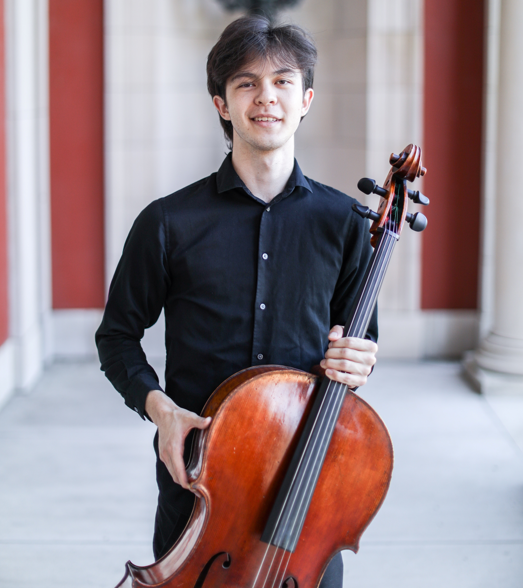

About
I am an undergraduate at the University of Michigan–Ann Arbor pursuing degrees in Astronomy & Astrophysics, Interdisciplinary Physics, and Cello Performance. My interests span galaxy dynamics, barred galaxies, and the use of simulations and survey data to understand galactic structure and evolution.
Outside of research, I work as a Data Management Fellow at the Center for Academic Innovation and serve as principal cellist of UM's University Philharmonia Orchestra. I enjoy connecting scientific work with communication, outreach, and music.

